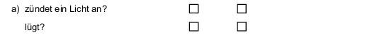
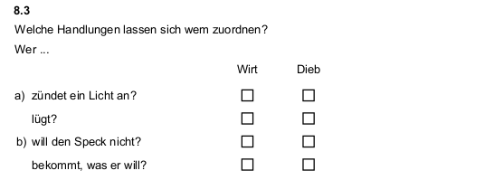
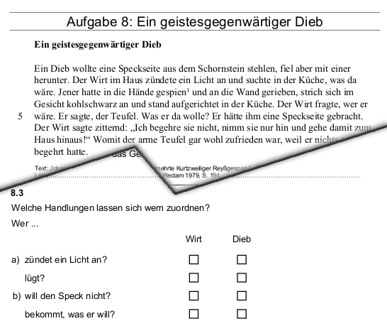

ein digitales VERA Aufgabenformat
Orientierung im Dschungel der Begriffe
…und Lösungsvorschläge
The nice thing about standards is that you have so many to choose from.
Begriffsklärung
Begriffsklärung
Onlinetest
CBA
VERA online/digital/am PC/etc.
…Ergänzungen?
 :
Online-Test
:
Online-Test
Was ist ein digitales Aufgabenformat?
Was ist ein digitales Aufgabenformat?
Eine vollständige digitale Repräsentation logisch zusammengehöriger Interaktionselemente
digitale Repräsentation
| Aufgabendatenbank | Online-Test |
|---|---|
|
digitale Speicherung zur
visuellen Darstellung
|
Darstellung am Bildschirm Interaktion mit Testperson Korrektur der Eingaben |
Was ist ein digitales Aufgabenformat?
Eine vollständige digitale Repräsentation logisch zusammengehöriger Interaktionselemente
Logisch zusammengehörige Interaktionselemente?
Logisch zusammengehörige Interaktionselemente?
Ein einzelnes Interaktionselement?
Logisch zusammengehörige Interaktionselemente?
Eine Zeile in der Itemkennwertetabelle? 
Logisch zusammengehörige Interaktionselemente?
Eine Teilaufgabe im Testheft? 
Logisch zusammengehörige Interaktionselemente?
Eine ganze Aufgabe?

Logisch zusammengehörige Interaktionselemente!
„Itembündel” mit gleichem Stimulus
Was ist ein digitales Aufgabenformat?
Eine vollständige digitale Repräsentation logisch zusammengehöriger Interaktionselemente
Was ist ein digitales Aufgabenformat?
Eine vollständige digitale Repräsentation einer Aufgabe